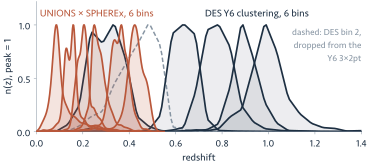

The SPHEREx satellite

NASA/JPL-Caltech, PIA26537: SPHEREx after environmental testing, BAE Systems, Boulder, November 2024.
SPHEREx scans the entire sky, at a low earth orbit
- Launched 11 March 2025; surveying since 1 May 2025
- 20 cm telescope, 3.5° × 11.5° field of view
- Polar orbit, looking ~90° from the Sun: the ecliptic poles are crossed on every orbit
- Orbits ~650 km above the Earth
Animation: NASA/JPL-Caltech (NASA SVS), "Novel Survey Strategy". Numbers: Bock et al. 2025 (arXiv:2511.02985).
Euclid and SPHEREx on the same 10′ of sky

Euclid VIS + Y + H · 0.1″ pixels
SPHEREx · 6.2″ pixels
A comparison of SPHEREx and Euclid observations

A simple selection of bright VIS sources within Euclid

- Select sources with Euclid: 16 < IE < 20.5 on PHZ
flux_vis_unif· - Peform forced photometry at the position of the Euclid sources within SPHEREx
- Estimate source redshifts with template fitting (Eazy: https://github.com/gbrammer/eazy-py)
Four galaxies, four kinds: Euclid and SPHEREx agree

We can see airglow from Helium with SPHEREx
The low-earth orbit means that SPHEREx sees some of the atmosphere.
The sun hits He I in the upper atmosphere.
SPHEREx sees this as emission.
If we're naive it looks like H alpha


The 13.8 M objects: galaxies, stars and failed fits
| all objects | galaxy sample | quality sample | stars | point-like | failed fits | removed by flags |
|---|---|---|---|---|---|---|
| 13,784,773 | 5,206,897 (37.8%) | 3,102,178 (22.5%) | 1,233,310 (8.9%) | 985,052 (7.1%) | 5,751,542 (41.7%) | 607,972 (4.4%) |

Sample homogeniety

Scrolling through redshift, both lobes
Redshift validation

Truth: DESI DR1 + 6dFGS + 2dFGRS + 2dFLenS + OzDES.
Redshift validation

Galaxy correlations

Eight sky maps: dust, star density, SPHEREx channel count, ecliptic latitude, zodi, background, visits, Euclid VIS depth; five are regressed.
In each shell, galaxy density is binned against each map. A trend counts only if it is 2× larger than in 400 lognormal mocks, which cluster but are clean.
Remove the worst trend with a linear fit, repeat until all pass, and weight each galaxy by 1/fit in its own shell.
What it shows
Neighbouring shells correlate (r = 0.15–0.33, the photo-z overlap); shells two or more apart are near zero.
The worst trends, removed in order
“Worst” = the map whose linear fit gains the most χ² over the mocks.
0.05–0.1: stars
0.1–0.2: none
0.2–0.3: channel count, ecliptic latitude, VIS depth
0.3–0.4: channel count, stars, VIS depth
0.4–0.5: channel count, stars
0.5–0.6: ecliptic latitude, channel count
Weights stay within 0.77–1.36.
CMB lensing cross-correlations

ℓCℓgκ to ℓ = 1000, black: the pipeline's model curve. Planck PR3 lensing, resolved galaxy sample, ISD-weighted. Pseudo-Cℓ with NaMaster (Alonso, Sanchez & Slosar 2019, MNRAS).
A similar catalogue, but with DESI legacy imaging instead
Some numbers for the full sky catalogue
| all objects | galaxy sample | quality sample | stars | failed fits | removed by cuts | calibration stars |
|---|---|---|---|---|---|---|
| 92,036,397 | 71,137,758 (77.3%) | 41,294,489 (44.9%) | 3,916,929 (4.3%) | 11,872,782 (12.9%) | 2,942,193 (3.2%) | 2,166,735 (2.4%) |

Summary
- A close to final Euclid+SPHEREx catalogue is available for anyone to use!
- The SPHEREx + DESI legacy imaging surveys sample is also available for anyone to use!
- If you're interested send me a message

Euclid × SPHEREx resolved galaxies, n(z) from reweighted spec-z, against the DES Y6 3×2pt lens bins (arXiv:2601.14559); each scaled to peak 1.
The same comparison for UNIONS × SPHEREx

UNIONS × SPHEREx, r < 20.5, n(z) from matched DESI redshifts, against the DES Y6 3×2pt lens bins (arXiv:2601.14559); each scaled to peak 1.
Backup slides
Everything from here on is for questions.
SPHEREx images have too conservative masking around stars
 Galaxies round three bright stars: fitted at z < 0.1 (blue) or 0.5 < z < 0.7 (orange). Left, the annulus background as published; right, the clipped median.
Galaxies round three bright stars: fitted at z < 0.1 (blue) or 0.5 < z < 0.7 (orange). Left, the annulus background as published; right, the clipped median.

place this in backup please
Moved to the first backup slide, straight after "Backup slides".
The near-infrared has to be observed from space

SPHEREx depth


The 12 templates: six quiescent, six star-forming

The stellar grid: BT-Settl model atmospheres, 400–7,000 K

Spectroscopic overlap
| catalogue | matches | what it is |
|---|---|---|
| ● DESI DR1 | 108,622 N 1,559 S | BGS, LRG, ELG, QSO clustering catalogues |
| ● 2dFGRS | 6,941 | bJ < 19.45, SGP strip + 2° random fields |
| ● 6dFGS | 1,049 | K < 12.65, whole southern sky, sparse |
| ● OzDES | 144 | DES supernova fields |
| 2dFLenS | (2,536) | in the report; server down today |